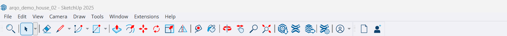

Only what you need.
Each of the 40 tools is a product of its own. Use the one you pick with all its core functions.
- Its own usage and help screen
- One shared ARQO installation and updates
- Add more tools later
From everyday modelling to project control.
Tools for the AEC world, in one product family.
The model that ships with the plugin. Drag to turn it and hover a part to read its name. The same model opens with the tools in the plugin view.
From line to structure, from first sketch to final detail.
Your modelling tools in one workshop.
Every tool can be bought on its own. Your collection grows with your needs.
Try another word or category.
Each of the 40 tools is a product of its own. Use the one you pick with all its core functions.
All 40 baseline tools. The ARQO additions included in the package. One uninterrupted modelling flow.
Click a tool on the ARQO toolbar: it runs on its scene in the model and reports the result. Ctrl+Z undoes it. Middle button orbits, Shift + middle button pans, the wheel zooms.

SketchUp is a trademark of Trimble Inc. This screen is a browser preview of the ARQO plugin; it is not SketchUp itself.
The icon you see on the site is the tool you use in the plugin.
Single tools and the complete package in the same workspace.
Tools sorted into categories, with simple and consistent settings.
Architectural lines, simple geometry and a single accent colour.
First drafts and revised icons side by side at real pixel sizes.
6 icons revised. The other 34 are kept as first drafts.
Click an icon to see the tool and how it looks at each size. Names and artwork are not final yet.